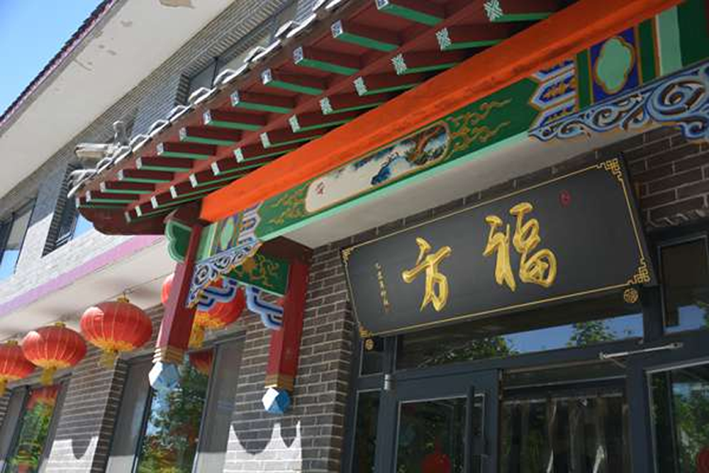

发布时间：2018年12月12日
浏览：2489
追溯系统凭借其真实记录产品生命周期得到了众多企业的认可，农业部也颁发公告，要求为农药产品添加溯源系统，溯源系统可以实现对产品的防伪、防窜货、溯源、营销、大数据分析等功能，下面了解一下溯源系统。
农药追溯系统系统简单介绍：
农药追溯系统是以二维码为载体，为每件、瓶、袋、箱产品附加一个特殊唯一的“身份证”号码，通过“物联网+”手段，为产品生命周期建立的全程溯源管理平台。
六大核心服务体系：
以二维码一体化为载体，着眼于企业产品溯源，为企业提供产品防伪、防窜货、精准营销、移动商城、CRM等一体化解决方案，一站式解决企业产品生命周期的问题。
通过产品信息管理，可以随时掌握库房的产品库存、销售、退货、调拨、拆箱等动态信息，便于企业及时作出对策。
后台管理系统主要有八大功能模块，每个功能都有自己特色功能，但彼此又相互关联，有效的保证了数据的可靠性、稳定性和安全性。
通过报表统计分析，可以对产品在每天、每周、每月、每季、半年、一年的不同的数据进行不同维度的分析统计，管理人员通过报表的数据，可以及时发现存在的问题快速作出决策。
通过二维码不仅直观判断出购买产品的真伪，同时还可以了解到产品标签内容以外的一些产品使用信息，大大提高产品使用效率。企业通过二维码不仅能提高企业品牌形象、提高企业影响力还可以维护企业的利益等。
广脉大数据引擎针对各行业特点、为各类消费品企业提供智能促销、扫码领红包系统、防伪溯源、防窜货、微商控价系统、大数据应用等解决方案，如果大家还想进一步的了解可以免费咨询： 微信/电话： 132-6800-2265 广脉科技为您提供一站式的定制服务。品使用效率。企业通过二维码不仅能提高企业品牌形象、提高企业影响力还可以维护企业的利益等。广脉大数据引擎针对各行业特点、为各类消费品企业提供智能促销、扫码领红包系统、防伪溯源、防窜货、微商控价系统、大数据应用等解决方案，如果大家还想进一步的了解可以免费咨询： 微信/电话： 132-6800-2265 广脉科技为您提供一站式的定制服务。
通过报表统计分析，可以对产品在每天、每周、每月、每季、半年、一年的不同的数据进行不同维度的分析统计，管理人员通过报表的数据，可以及时发现存在的问题快速作出决策。
通过二维码不仅直观判断出购买产品的真伪，同时还可以了解到产品标签内容以外的一些产品使用信息，大大提高产品使用效率。企业通过二维码不仅能提高企业品牌形象、提高企业影响力还可以维护企业的利益等。通过报表统计分析，可以对产品在每天、每周、每月、每季、半年、一年的不同的数据进行不同维度的分析